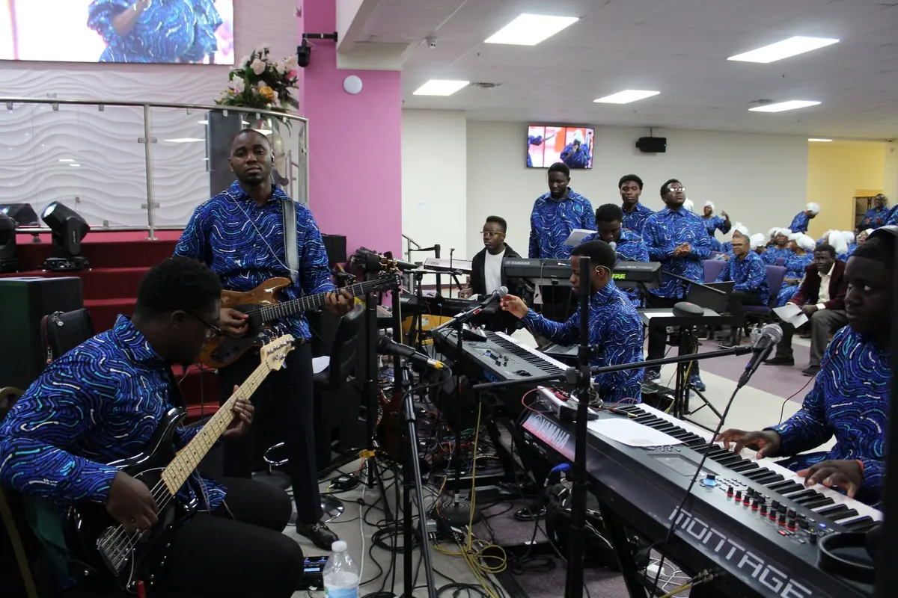

Watch live
Encounter God wherever you are.
Join regional services online and continue with the latest messages from Mega Region 2.
Next serviceHealing & Deliverance HourTuesday · 7:00 PM CTOpen scheduled streams
Latest available service
Continue watching
Open media library